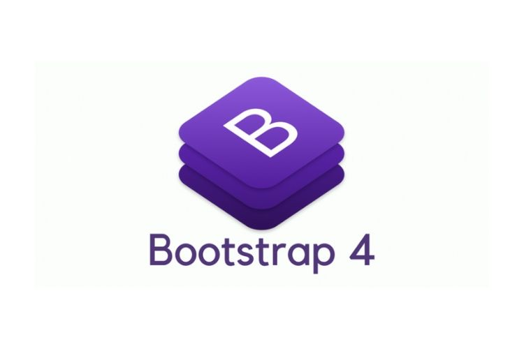

Los Fundamentos Basicos Del Lenguaje CSS
¿Que es CSS?
Segun openWebinars, CSS es un lenguaje de diseño gráfico que le permite definir y crear representaciones de documentos estructurados escritos en lenguajes de marcado. Es ampliamente utilizado para crear documentos web escritos en HTML y el diseño visual de las interfaces de usuario.
Partes Principales de CSS
Segun Desarrollo web:
Selectores: Con él podemos especificar a qué elementos de la página nos referimos.
Atributos: estilos para definir lo que queremos diseñar en el selector especificado.
Una serie de valores que indican qué estilo se debe aplicar a cada atributo en cada selector. Los valores se expresan en unidades CSS y se utilizan para cuantificar valores (píxeles, puntos...)
¿Qué son los selectores CSS?
- Identificaciòn
- Etiqueta HTML
- Pseudoclase
- Combinaciòn
- Clase
Los 6 Frameworks Del Lenguaje CSS Mas Conocidos
Bootstrap
Es el framework CSS más popular en 2020 y se utiliza en innumerables proyectos. Cuando apareció, creó la tendencia de los marcos basados en componentes, lo que permitió temas de diseño completos y complejos, aportando gran simplicidad y agilidad al desarrollo de CSS y brindando a los programadores herramientas para crear fácilmente diseños consistentes.

Materialize CSS
Materialise es un framework CSS que implementa el tema de diseño "Diseño de materiales". Proporciona componentes de material listos para usar que se pueden integrar fácilmente en sitios web, lo que permite diseños guiados por las pautas de aplicaciones y sitios web de Google.

Tailwind CSS
Este es un framework CSS que proporciona un enfoque diferente al de otros marcos como Bootstrap. Tailwind CSS en realidad no tiene muchos componentes, sino clases de utilidad que se aplican directamente sobre CSS. Estos marcos también se conocen como "primero la utilidad" y proporcionan estilos CSS atómicos. Si bien también le permite crear componentes, se deja más a los desarrolladores que pueden personalizarlos a su gusto.

Foundation
Foundation es uno de los framework CSS basados en componentes más importantes de la actualidad. Tiene muchos seguidores y mantiene una base de código que se actualiza con frecuencia para incluir CSS nuevo.

Bulma
Este es un Framework CSS basado en componentes que usa Flexbox para simplificar el código.

Tachyons
Es un framework CSS basado en clases de utilidad con CSS atómico. Mismo enfoque que Tailwind CSS. La diferencia es que el marco está diseñado para ser liviano y simple, usa CSS liviano (~14 KB) y se puede usar sin herramientas de optimización.
BIBLIOGRAFIA
CSS. (s. f.). Desarrollo Web. Recuperado 27 de septiembre de 2022, de: Link
Frameworks CSS. (s. f.). Desarrollo Web. Recuperado 27 de septiembre de 2022, de: Link
Jiménez, J. D. P. (2021, 26 agosto). Qué es CSS3 y sus fundamentos. OpenWebinars.net. Recuperado 27 de septiembre de 2022, de: Link